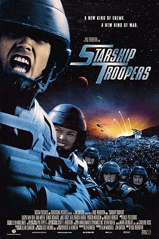

星河战队 / Starship Troopers
又名：星舰战将(台) / 太空战士 / 星河舰队 / 人虫大战 / 星船伞兵
小学2年级看的合肥点播台，看了好几遍才看到结局 _(:з)∠)_ 真是难忘的回忆啊，当时还不是很懂
作品信息
| 导演 | 保罗·范霍文 |
| 编剧 | 爱德·诺麦尔 / 罗伯特·A·海因莱因 |
| 主演 | 卡斯帕·范·迪恩 / 迪娜·迈耶 / 丹妮丝·理查兹 / 杰克·布塞 / 尼尔·帕特里克·哈里斯 / 克兰西·布朗 / 塞斯·吉列姆 / 帕特里克·茂顿 / 迈克尔·艾恩塞德 / 露·麦克拉纳罕 / 马绍尔·贝尔 / 埃里克·布鲁斯科特尔 / 马特·莱文 / 布蕾克·林斯利 / 安东尼·瑞维瓦 / 布兰达·斯特朗 / 迪恩·诺里斯 / 克里斯托弗·柯里 / 莱诺尔·卡斯多夫 / 罗伯特·斯莫特 / 斯蒂芬·福特 / 罗伯特·大卫·豪尔 / 艾米·斯马特 / 蒂莫西·奥门德森 / 代尔·戴 |
| 类型 | 动作 / 科幻 / 惊悚 / 冒险 |
| 制片国家/地区 | 美国 |
| 语言 | 英语 |
| 上映日期 | 1997-11-07 |
| 片长 | 129 分钟 |
| IMDb | tt0120201 |
说过什么
2018-01-14 11:53:36
看过 · 时间来自广播，短评来自标记页
小学2年级看的合肥点播台，看了好几遍才看到结局 _(:з)∠)_ 真是难忘的回忆啊，当时还不是很懂
最后一次看到是 2026-08-01T11:06:09+10:00 · 豆瓣原页